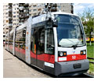
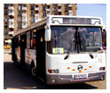

OTL SA este membru a Uniunii Române de Transport Public, asociaţie patronală neguvernamentală, apolitică, autonomă, cu activitate non-profit ,
Directorul general al OTL SA, dr. ing. Csuzi István fiind membru în Biroul Executiv URTP.
În municipiul Oradea transportul public de călători se desfăşoară cu tramvaie şi autobuze între orele 500 - 2400.
TRAMVAIE

În zilele lucrătoare primele tramvaie ale societăţii pornesc din depou la ora 430 spre capetele de linii, pentru a deservi transportul public începând cu ora 500 şi continuând până la orele 2330 când tramvaiele se retrag la depou
AUTOBUZE

Transportul public cu autobuze se desfăşoară între orele 500 - 2330. Numărul de mijloace de transport puse în funcţiune pe timpul zilei variază în funcţie de numărul de călători, ore de vârf fiind considerate între 500 - 800 şi 1300 - 1700.
În ajutorul călătorilor vă punem la dispoziţie graficul de circulaţie al autobuzelor şi tramvaielor, cu informaţii despre durata cursei, lungimea traseului, numărul de mijloace de transport în circulaţie la diferite ore ale zilei în zile lucrătoare şi sărbători, precum şi perioada vacanţelor pentru şcolari şi studenţi.
Populaţia deservită: 240.000 locuitori
Suprafaţa deservită: urbană 115,56 kmp şi suburbană 0 kmp.
| |
Număr trasee |
Lungime trasee |
Lungimea reţelei |
Număr staţii |
Interval succedere
(ore de vrf) |
| Tramvaie: |
5 |
37,14 km
| 19,21 km
| 157
| 6 minute
|
| Autobuze: |
9 |
54,35 km
| 38,55 km
| 179
| 12 minute
|
OTL RA a întrodus un sistem nou de dispecerizare şi monitorizare trafic cu urmărirea mijloacelor de transport în comun prin GPS. Sistemul realizat permite programarea curselor de tramvaie şi autobuze, urmărirea lor pe traseu, poziţia lor faţă de staţii de oprire, trimiterea de mesaje conducătorilor de mijloace de transport pentru corecţii de/pe traseu, totodată urmărirea tuturor mijloacelor de transport monitorizate pe harta digitală o municipiului.
Monitorizarea traficului se va realiza la trei dispecerate, cîte una la capetele de linii tramvaie (Nufărul şi Pod CFR), respectiv sediul OTL pentru autobuze. Poziţia vehiculelor OTL pe trasee poate fi urmărită şi de către vizitatorii paginii web a societăţii, accesând harta google a traseului selectat. Poziţia vehiculelor este redată cu o săgeată neagră, ea fiind reînprospătată din 30 în 30 de secunde.
Tramvaiele şi autobuzele au fost echipate cu dispozitivele necesare pentru localizare prin GPS. Dispecerii de circulaţie programează tramvaiele pe linii pe baza unui grafic stabilit pe parcursul anilor, urmărând apoi traseul şi respectarea parametrilor pe monitoare. Semnalele de poziţie ale mijlocului de transport transmise prin GPRS sunt prelucrate şi transmise informaţii către panourile de informare călători, care se află montate în statiile de aşteptare. În prezent sunt echipate 25 staţii de tramvaie şi 15 staţii de autobuze cu panouri de informare călători.
» Lunii autobuze «
» Lunii tramvaie «